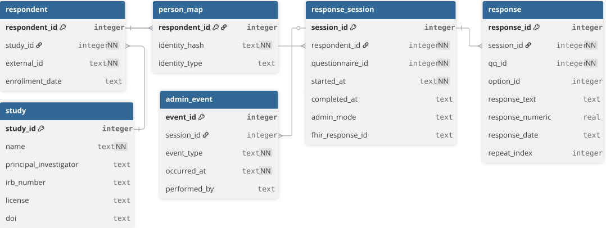
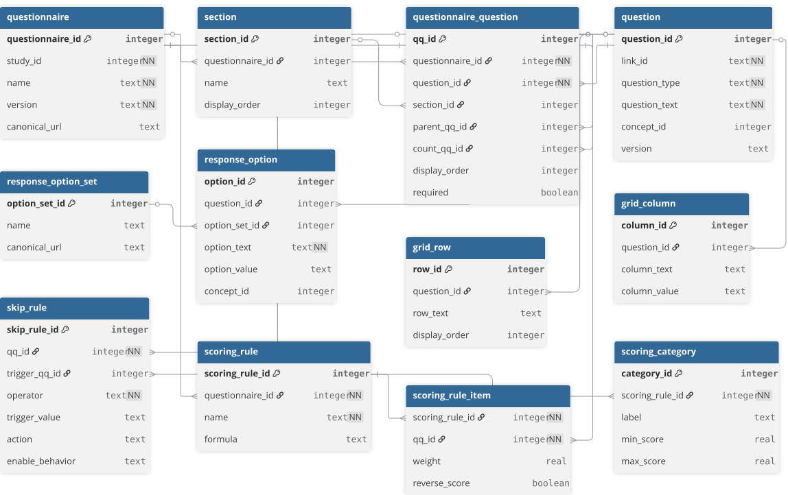
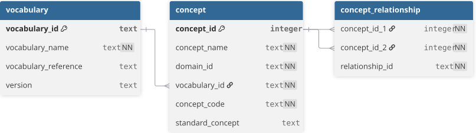
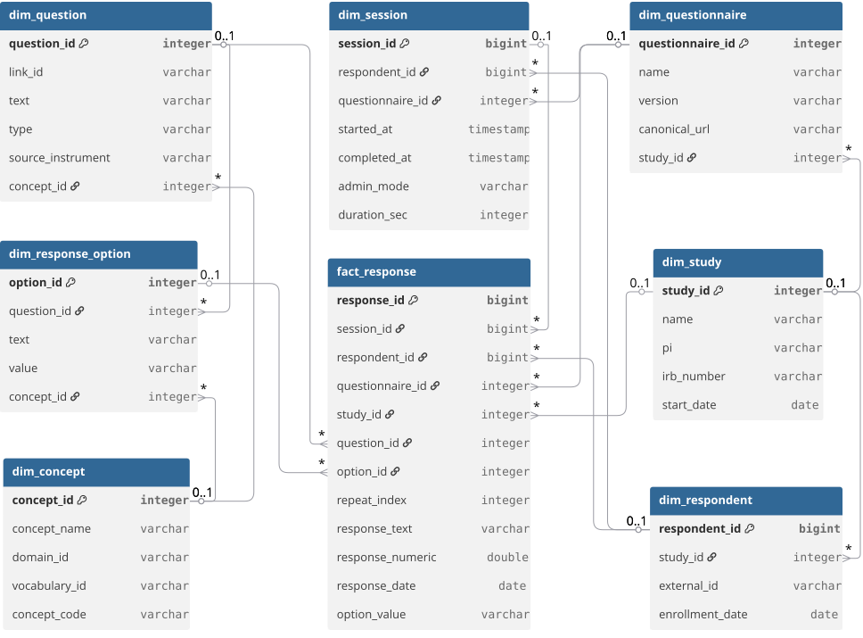

The quickq Data Model¶
The data model is the central argument for using quickq. Every analytical capability described in the rest of this documentation — skip-logic recipes, completion-rate accounting, the auto-generated data dictionary, scoring, cross-study harmonization on concept codes — falls out of the way data is stored. Read this page first; the rest of the docs is downstream from it.
quickq's data model has two halves connected by a refresh.
The OLTP half (SQLite) is the source of truth. It stores every authored instrument, every collected response, and every piece of provenance about how the study was run. One .db file is the complete portable study artifact.
The OLAP half (DuckDB) is the analytical projection. It is rebuilt on demand from OLTP by quickq refresh. Every report, dashboard, federated query, and cross-study harmonization runs against OLAP — never against the OLTP file directly. The OLAP schema is stable and standardized; the OLTP schema is normalized and intentionally allowed to evolve over time.
Each half has logical layers — distinct concerns that compose into the full model. The diagrams on this page show those layers individually rather than overwhelming you with a single 40-table chart. For the full table-by-table reference, see OLTP Schema and OLAP Schema.
Why per-layer diagrams
Real-world cohort study databases run to 30–50 tables. A single diagram that tries to show all of them either crops out the columns that matter or routes lines through other tables. We adopt the OMOP CDM convention: one diagram per logical layer, with clear callouts where the layers connect. Each diagram below shows the most informative columns per table; the SQL DDL has the rest.
OLTP — what's collected¶
Four layers. Together they answer what was authored, what was collected, what does each value mean, and how do we know it's trustworthy.
1. Study and response flow¶
The data-collection lifecycle. A study has many respondents; each respondent has many response_sessions; each session has many responses. admin_event records dispatch / reminder / mode-change activity around a session. person_map is a separate identity index for studies that need linkable identity outside the response_session table.

This layer is the entry point for almost every analytical question: "how many respondents", "how many sessions per respondent", "what's the completion rate by admin mode". The integer surrogate keys (respondent_id, session_id) are quickq's; the external_id on respondent is the study-assigned participant identifier that researchers actually recognize.
2. Instrument definition¶
What the questionnaire actually asks. A questionnaire has sections; each section has questionnaire_question placements (the verb is "places this question here, in this order, with these skip rules and scoring weights"); each placement points to a reusable question. Options for choice questions live in response_option, optionally grouped into shared response_option_sets. Grid questions use grid_row × grid_column. Skip logic is structured in skip_rule. Scoring is structured in scoring_rule / scoring_rule_item / scoring_category.

The reuse pattern is intentional: a question (LOINC 44250-9 "Little interest or pleasure in doing things") can be placed in many questionnaires under the same link_id with different display order, required flag, or scoring weight. That separation between the question and the question's placement is what makes harmonization across instruments possible.
questionnaire_question.parent_qq_id and count_qq_id together support repeating-group questions: parent_qq_id chains the children into a group, count_qq_id links the group to a numeric question that drives N. The skip_rule table is the structured form of FHIR's enableWhen and is what every cross-instrument skip-logic recipe queries against.
3. Vocabulary¶
Standard concept codes for cross-study harmonization. Modeled directly on OMOP CDM v5.4: a vocabulary (LOINC, SNOMED, NCI, BRFSS, Local) groups concepts identified by (vocabulary_id, concept_code), with concept_id as the surrogate. concept_relationship rows encode "Maps to", "Is a", "Subsumes", "Answer of".

Every question, response_option, grid_row, and grid_column may reference a concept_id (the FK is shown in the instrument diagram, not redrawn here). When two studies use the same LOINC code on the same construct, joining their data is a single SQL JOIN. When they don't, the concept_relationship table makes the mapping explicit instead of folkloric.
The vocabulary plane is small (three tables) but it is the single most important integration surface: it is what makes a quickq study composable with OMOP cohorts, REDCap projects with codings, and FHIR Implementation Guides.
4. Provenance and quality¶
How questions evolved, what data quality issues were flagged, who did what to the database. question_lineage tracks rewords / option changes / splits / merges / adapted_from edges between question versions. question_equivalence declares which questions can be pooled across versions. questionnaire_version_diff records cross-version structural changes. data_quality_flag is written at collection time when the FHIR ingester rejects an answer. study_errata_log is the researcher's hand-recorded "we discovered after the fact that sessions 1–20 had a delivery bug" log. tool_audit_log records every quickq command that touched the database.
| Table | Purpose | Key columns |
|---|---|---|
question_lineage |
Edges between question versions: reword, option_change, split, merge, adapted_from | lineage_id, question_id, parent_question_id, change_type |
question_equivalence |
Declares which questions can be pooled across versions | equivalence_id, source_question_id, target_question_id, equivalence_type |
questionnaire_version_diff |
Cross-version structural changes at questionnaire level | diff_id, source_questionnaire_id, target_questionnaire_id, change_type |
data_quality_flag |
Written at collection time when the FHIR ingester rejects an answer | flag_id, session_id, qq_id, severity, description, raised_at |
study_errata_log |
Researcher's hand-recorded errata (delivery bugs, batch issues, retracted sessions) | errata_id, study_id, severity, title, status, raised_at |
tool_audit_log |
Every quickq command that touched the database | audit_id, study_id, operation, performed_by, occurred_at |
This layer is what lets a researcher answer "what changed between v1 and v2 of the instrument", "did this respondent's responses get flagged at any point", and "when was this database last modified, by what command". The lineage and equivalence tables propagate to the OLAP dim_question_lineage and dim_question_equivalence so analytical queries can use them too.
OLAP — what's derived¶
Four layers, all rebuilt by quickq refresh. The OLAP schema is the contract analytical tooling depends on: it is stable across releases, while the OLTP schema is allowed to evolve.
1. Star schema¶
The analytical core. fact_response is one row per answer atom; the eight dim_* tables are the standard star points. Every analytical query starts with a SELECT against fact_response and joins outward to the dimensions.

Several things to notice:
- The same query shape works for every question type and every instrument. A SELECT on
fact_responsejoined todim_questionanddim_response_optionanswers "what's the distribution of answers to this question" regardless of whether the question is a single_choice, multiple_choice, likert, or boolean. That uniformity is what makes the star-schema model worth the redundancy of a wide fact table. - Snowflake edges connect the dimensions to each other.
dim_session → dim_respondent → dim_studyanddim_session → dim_questionnaire → dim_studyform two parallel paths up to study, which is what enables study-level rollups without aggregating from facts.dim_question → dim_conceptanddim_response_option → dim_conceptmake concept-based harmonization a JOIN, not a custom script. fact_responsecarriesrepeat_index. For repeating-group questions (a pregnancy history loop, an occupational history loop), each instance gets a 0-based index so per-instance aggregation works in standard SQL.
The dim_date table participates in two date-keyed joins (fact_response.response_date_key, fact_response.session_start_key) that aren't drawn here because those columns are part of the "+ 12 more columns" trim — see the OLAP schema reference for the full fact table.
2. Aggregates¶
Materialized rollups. Each agg_* table is a precomputed answer to a recurring analytical question, joinable to the same dim_* tables shown in the star schema.
| Table | Purpose | Key columns |
|---|---|---|
agg_question_distribution |
One row per (question, answer) — counts and percentages | study_id, questionnaire_id, question_id, option_id, n, pct |
agg_session_completion |
Daily enrollment and completion rollup by admin_mode | study_id, questionnaire_id, date_key, n_started, n_completed, completion_rate, median_duration_sec |
agg_respondent_scores |
One row per (respondent, session, scoring_rule) — raw score and severity band | respondent_id, scoring_rule_id, scoring_rule_name, score_raw, score_category, items_answered |
agg_numeric_stats |
Per-question numeric summary (mean, median, std_dev, percentiles) | study_id, question_id, n, mean, median, std_dev, min_val, max_val |
agg_question_distribution— for each (question, option), how many respondents picked it and what percentage. This is whatquickq reportreads to produce the per-question distribution tables.agg_session_completion— daily enrollment and completion rates broken down byadmin_mode. This is the "are people finishing the survey?" view.agg_respondent_scores— one row per (respondent, session, scoring_rule). Stores the computed raw score and the severity category (PHQ-9 "moderate", GAD-7 "mild"). This is what cohort queries read to filter by score band.agg_numeric_stats— n / mean / median / std_dev / quartiles for every numeric question. Avoids re-aggregating from facts when the answer is the same shape every time.
Aggregates are recomputed in full on every quickq refresh. They exist for query performance and for standardization (every site, every report, every downstream tool reads the same definition of "PHQ-9 mean score").
3. OMOP interoperability¶
OMOP CDM v5.4-aligned tables, projected from the star schema for cross-study harmonization with other OMOP cohorts.
| Table | Purpose | Key columns |
|---|---|---|
omop_observation |
Every fact_response with a question concept_id projects here. Values resolve across value_as_number (numeric), value_as_concept_id (choice), and the date columns. person_id is respondent_id. |
observation_id, person_id, observation_concept_id, observation_date, value_as_number, value_as_concept_id |
omop_survey_conduct |
Every response_session projects here — which respondent took which questionnaire, when, for how long | survey_conduct_id, person_id, survey_concept_id, survey_start_date, survey_end_date |
omop_unmapped_questions |
Questions without a concept_id, surfaced as the actionable list before federated export | question_id, link_id, question_text, source_instrument |
omop_observation— every fact_response row that has a question concept_id projects into observation. This is what an OMOP-native analyst expects to query, byobservation_concept_id, with the value resolved acrossvalue_as_number(numeric responses),value_as_concept_id(choice responses), and the date-typed columns.person_idhere isrespondent_idfrom quickq's perspective.omop_survey_conduct— every response_session projects into survey_conduct. This is the "which respondent took which questionnaire, when, for how long" view.omop_unmapped_questions— surfaces questions that don't have aconcept_idand therefore can't project into observation. This is the actionable list for a researcher preparing to share data: map these before federated export.
The OMOP layer is additive. quickq's native star schema (above) is the analytical contract for quickq itself; the OMOP layer is the bridge to the broader OHDSI ecosystem. Studies that don't need OHDSI compatibility can ignore the omop_* tables entirely.
4. Provenance¶
Three small tables that record how the OLAP was built and how its dimensions evolved.
| Table | Purpose | Key columns |
|---|---|---|
refresh_log |
One row per quickq refresh invocation |
refresh_id, started_at, completed_at, rows_inserted, rows_updated |
dim_question_lineage |
Mirrors OLTP question_lineage. Lets analytical queries walk the parent chain to find earlier versions of the same construct. |
lineage_id, question_id, parent_question_id, change_type |
dim_question_equivalence |
Mirrors OLTP question_equivalence. Lets cross-study cohort queries pool semantically equivalent questions across versions. |
equivalence_id, source_question_id, target_question_id, equivalence_type |
refresh_log— one row perquickq refreshinvocation. Captures start / end timestamps, rows inserted, rows updated. Useful for "when was this analytical database last refreshed".dim_question_lineage— mirrors OLTPquestion_lineage. Lets an analytical query that touchesdim_questionwalk up the parent chain to find an earlier version of the same construct.dim_question_equivalence— mirrors OLTPquestion_equivalence. Lets a cross-study cohort query pool semantically equivalent questions across instrument versions.
The provenance layer is small but it is what makes "why did this score change between refreshes" and "show me the v1 question this v2 question replaces" answerable in standard SQL.
How OLTP becomes OLAP¶
The bridge between the two halves is quickq refresh. It reads the OLTP file via DuckDB's native SQLite extension, applies a small set of transformations, and writes the standardized OLAP tables.
graph LR
OLTP["OLTP — SQLite<br/>(source of truth)"]
REFRESH{{quickq refresh}}
OLAP["OLAP — DuckDB<br/>(analytical contract)"]
OLTP -->|incremental by response_id| REFRESH
REFRESH --> OLAP
OLAP -->|reads| Reports["Reports · Cohort queries · Federated · OMOP export"]
style OLTP fill:#5A9BD4,color:#fff
style OLAP fill:#FAA75B,color:#fff
style REFRESH fill:#7AC36A,color:#fffThe refresh is incremental by response_id watermark — only newly arrived responses are processed on subsequent runs. It is on-demand, not streaming: appropriate for batch / research workflows. It is lossy in one direction: the OLAP can be regenerated entirely from OLTP at any time, but the OLTP cannot be regenerated from OLAP. The portable study artifact is always the SQLite file.
For implementation detail, see Architecture.
Going deeper¶
- Full column-by-column reference: OLTP Schema, OLAP Schema.
- Architecture decisions (why two stores, why FHIR is the boundary, why scoring is in OLTP not OLAP): Architecture, Design Decisions.
- Query patterns by question type: Query Patterns Reference.
- Diagram source: the
.dbmlfiles underdocs/database/source/are the editable source for the diagrams above. They open directly in dbdiagram.io for layout adjustments.